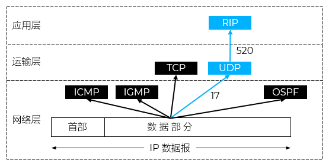
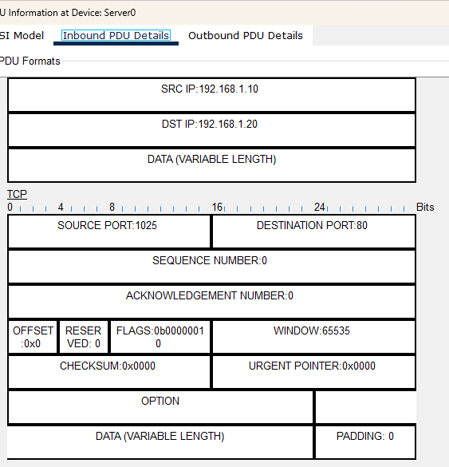
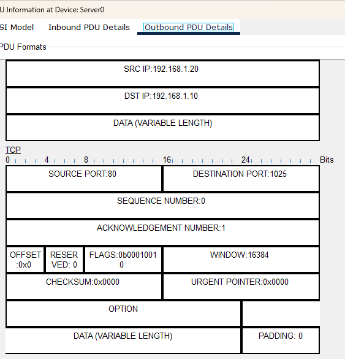
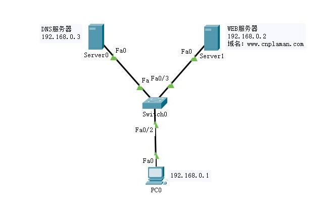
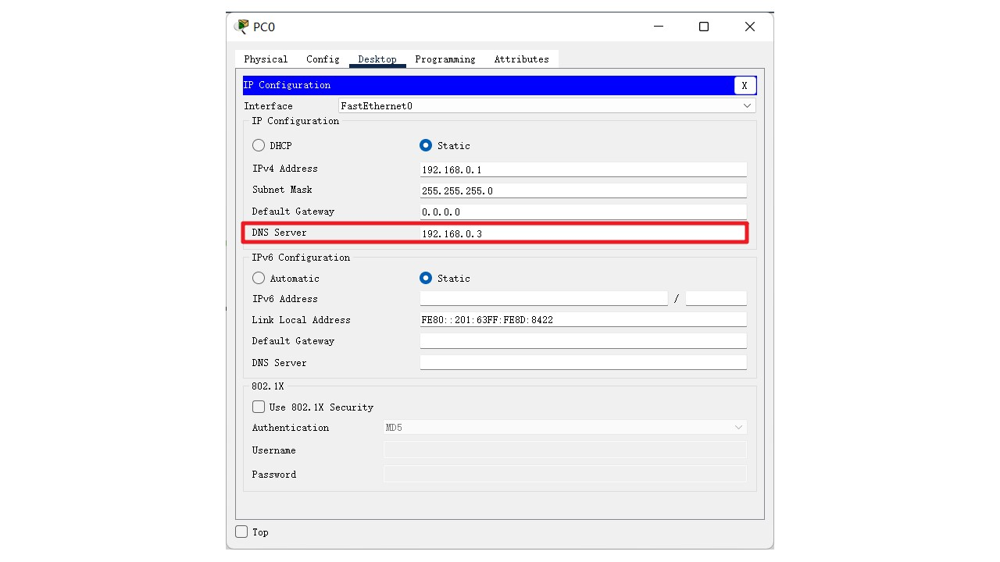
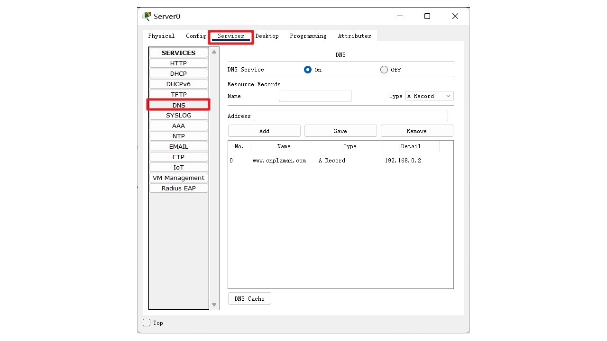
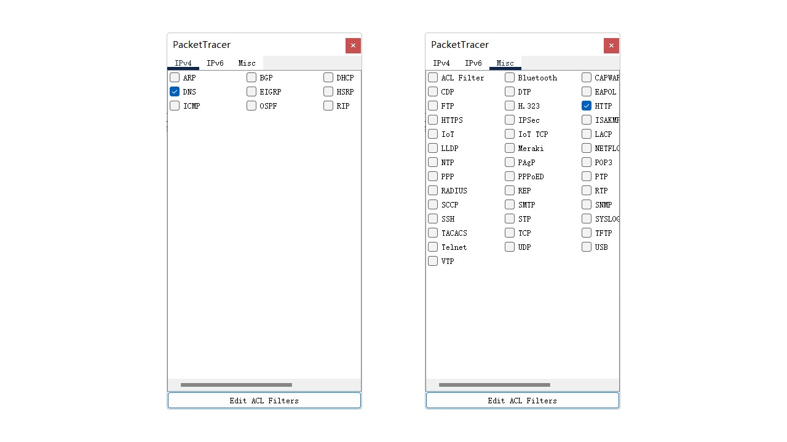
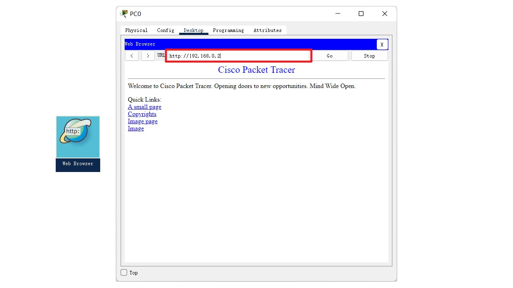

协议端口号
@Port- 含义 Concept
- 简称端口
- 是一种软件地址，用于标识同一台主机上的不同 应用程序进程
- 两个计算机中的进程要互相通信，不仅需要知道对方的IP地址，还要知道对方的端口号
- 长度：16bit
- 范围：0-65535
- 作用域 Scope
- 只具有 本地 意义
- 同一台主机上，不同进程通过端口号区分
- 跨主机通信时，IP + 端口共同构成套接字 Socket，才是全局唯一标识 - (IP: port)
https://glplaman.github.io:443
http://localhost:3000
http://localhost:8080
http://127.0.0.1:5173
常见端口分类 Classification
- 熟知端口 Well-known Ports
- 分配给标准服务、常用服务、重要服务
- 0-1023
- 登记端口 Registered Ports
- 为没有成为熟知端口的应用程序使用
- 适用于尚未成为标准但需固定端口的服务
- 需在IANA登记
- 1024-49151
- 临时端口 Ephemeral Ports
- 临时端口，客户端程序随机选择使用
- 无需登记
- 49152-65535
- 应用层协议，依赖于用户数据报 UDP(User Datagram Protocol) 传输数据
- 需要指定一个 UDP 端口号 - 520，用于标识 RIP 报文
- 下行 ↓：RIP 报文封装在 UDP 数据报中，再由 IP 层传输，对应协议号 17
- 上行 ↑：IP 封装的数据报要交给上层的 UDP 处理；UDP 的数据要交给上层的 RIP 处理
- 网络层协议
- OSPF 没有分配端口？
- 可靠性由自身实现
OSPF 自己实现了可靠传输机制（如 LSA 确认、重传、序列号等），不需要依赖 TCP
- 效率更高
跳过 TCP/UDP 层可以减少开销，尤其在大型网络中频繁交换链路状态信息时更高效
不需要额外的首部开销 - TCP/20byte、UDP/8byte
不希望被拥塞控制限制 - 网络一旦变化，应尽快通告出去
不需要建立连接 - Hello报
应可靠送达 - UDP 虽轻量，但不可靠
- 组播支持更好
OSPF 大量使用组播（如 224.0.0.5 和 224.0.0.6），而 UDP 虽然也支持组播，但 OSPF 直接基于 IP 可以更灵活地控制报文格式和行为
- 协议定位不同
RIP 是简单的距离矢量协议，适合用 UDP
OSPF 是复杂的链路状态协议，需要更精细的控制，因此直接构建在 IP 之上
- 端口状态 Status
- LISTENING：等待连接请求
- ESTABLISHED：连接已建立
- CLOSED：端口未开放或连接已关闭
- 注意事项 Caution
- 不要随意开启不必要的端口
- 定期检查开放的端口和服务
- 使用防火墙限制端口访问权限
- 注意端口扫描攻击防护
Internet Assigned Numbers Authority - IANA：互联网号码分配机构
IANA 的端口登记是自愿性的，但强烈推荐用于公共协议或跨组织部署的服务，以避免端口冲突
| protocol | port |
|---|---|
| FTP | 20 / 21 |
| SSH | 22 |
| Telnet | 23 |
| SMTP | 25 |
| DNS | 53 |
| HTTP | 80 |
| HTTPS | 443 |
| POP3 | 110 |
| RIP | 520 |
| DHCP | 67 / 68 |
| MySQL | 3306 |
| Redis | 6379 |
| MongoDB | 27017 |
| PostgreSQL | 5432 |



端口工作机制 Mechanism
- 以客户端/服务器 C/S(Client/Server) 为例
- 每个 TCP/UDP 数据段都包含源端口号和目标端口号
- 目标端口号用来标识接收方主机上的 特定 服务
- 源端口号用于标识发送方的应用程序，以便接收方能正确回应
- 数据总是从源端口流向目标端口
- 客户端 Client/C 发起连接
- 客户端选择一个临时端口(49152-65535范围内)作为源端口
- 客户端指定服务器的熟知端口(0-1023)作为目标端口
- 服务器 Server/S 响应
- 服务器使用其熟知端口作为源端口
- 服务器使用客户端的临时端口作为目标端口
- 当用户在浏览器中访问/请求一个网站时
源端口: 客户端(用户的电脑)随机选择一个临时端口，如 1025
目标端口: Web服务器的标准HTTP端口 80
数据流向: 用户电脑(端口1025) → Web服务器(端口80)
- Client/1025 → Server/80
- 当Web服务器返回响应时
源端口: Web服务器的HTTP端口 80
目标端口: 用户电脑之前使用的临时端口 1025
数据流向: Web服务器(端口80) → 用户电脑(端口1025)
- Server/80 → Client/1025
- 使用 SMTP 协议
- 邮件客户端使用的临时端口，如 51001
- 邮件服务器的SMTP端口 25
- 发送邮件
- Client/51001 → Server/25
- 收邮件
- Server/25 → Client/51001
- 套接字 Socket
- 套接字是网络通信中的一个抽象概念，用于唯一标识网络上的一个通信端点 endpoint
- 它由以下三部分组成
协议
IP 地址
端口号
- 数据总是从源端口流向目标端口
- 无论 UDP 还是 TCP，通信都涉及两个端点 - 四元组 4-tuple
- (src_IP, src_port, dst_IP, dst_port)
- 在某些场景（如防火墙、NetFlow），还会加入协议类型，形成五元组
- (TCP, 192.168.1.10, 52000, 93.184.216.34, 80)


复用分用 Multiplexing & Demultiplexing
- 复用和分用在每个层都有不同的体现
- 应用层
- 唯一面向应用进程
- 它使得多个应用程序可以同时、独立地使用网络，而互不干扰
- 这是现代多任务操作系统和互联网服务（Web、视频、聊天等并发）的基础
- 网络层
- 让多种上层协议（TCP/UDP/OSPF/ICMP）能共享 IP 服务，靠 Protocol 字段区分
- 它只能区分协议类型，不能区分具体应用
- 过程：一端复用；另外一端分用
- 假设一台主机同时运行：
Web 服务 - 使用 TCP
DNS 查询 - 使用 UDP
OSPF 路由进程 - 直接使用IP
执行 ping - 产生 ICMP
- 这些上层协议都会调用 IP 模块发送数据：
- 所有数据都被封装成 IP 数据包，通过同一个网络接口发出
- 网络层的复用：多个上层协议共享 IP 服务
- 当主机收到一个 IP 数据包时：
解析 IP 头部；
读取 Protocol 字段；
根据值将 payload 交给对应模块：
- 网络层的分用：准确投递给正确的上层协议
- 数据链路层
- 让多种网络层协议（IPv4/IPv6/ARP）能在同一物理链路上共存，靠 Type 字段区分
- 在标准以太网帧中，有一个 2 byte的 Type 字段，用于标识上层协议类型
0x0800 IPv4
0x0806 ARP
0x86DD IPv6
0x8100 VLAN Tag（IEEE 802.1Q）
0x8847 / 0x8848 MPLS
- 发送时：不同网络层协议的数据都能通过链路层发送
- 接收时：链路层能判断这个帧该交给 IP 模块还是 ARP 模块等
- 假设主机要发送：
一个 IPv4 数据包
一个 ARP 请求（查询 MAC 地址）
一个 IPv6 数据包
- 链路层会为它们分别构造以太网帧，并设置不同的 EtherType：
- 所有帧都通过同一个物理接口（如 eth0）发送出去
- 链路层的复用：多种网络层协议共享同一链路
- 当网卡收到一个以太网帧：
解析帧头部
读取 EtherType 字段
根据值将 payload 交给对应网络层模块
- 链路层的分用：确保 ARP 不被当成 IP 处理，IPv6 不被误认为 IPv4
- 其他链路技术的类似机制
- PPP（点对点协议）：使用 Protocol Field（如 0x0021 = IPv4, 0x0057 = IPv6）
- Wi-Fi（802.11）：在 LLC/SNAP 头部中携带 EtherType
- MPLS：使用标签（Label）隐式指示上层协议，或通过显式空标
- 重要意义
- 协议共存：没有它们，一台设备只能运行一种网络协议；比如只能用 IPv4，不能同时用 IPv6 或 ARP
- 模块解耦：各层只需关心自己的标识字段，无需了解上层细节
- 扩展性：新增协议（如未来的新网络层协议）只需分配新 EtherType 或 Protocol 号即可接入现有系统
[TCP 段] → IP(Protocol=6) [UDP 报文] → IP(Protocol=17) [OSPF 报文] → IP(Protocol=89) [ICMP 报文] → IP(Protocol=1)
IP(Protocol=6) → 交给 TCP 模块 IP(Protocol=17) → 交给 UDP 模块 IP(Protocol=89) → 交给 OSPF 引擎 IP(Protocol=1) → 交给 ICMP 处理器
[IPv4 包] → Ethernet Frame (EtherType=0x0800) [ARP 请求] → Ethernet Frame (EtherType=0x0806) [IPv6 包] → Ethernet Frame (EtherType=0x86DD)
EtherType=0x0800 → 交给 IPv4 模块 EtherType=0x86DD → 交给 IPv6 模块 EtherType=0x0806 → 交给 ARP 模块
实操 Drill
- 基本过程
- 网络拓扑
- Host主机配置：IP地址 192.168.0.1；添加 DNS 服务器地址 192.168.0.2
- WEB服务器配置：IP地址 192.168.0.2
- DNS服务器配置：配置IP地址 192.168.0.3；添加WEB服务器对应的域名信息，如 www.cnplaman.com
- 测试网络连通性
- Host主机 → WEB服务器
- Host主机 → DNS服务器
- WEB服务器 → DNS服务器
- 单步测试数据报的发送过程
- 筛选协议，保留 HTTP、WEB
- 查看端口和协议运用情况
- Host主机访问/请求：打开主机的WEB浏览器；输入 www.cnplaman.com
- DNS服务器解析域名：www.cnplaman.com → 192.168.0.2
- WEB服务器响应：看到返回的WEB页面





Summary & Homework
- Summary
- 端口含义和作用
- 端口分类
- 端口工作机制
- 端口的分用和复用
- Homework
- 熟知端口分别有哪些？
- 根据实操部分的内容，完成端口的测试
- 某通信连接五元组为 (TCP, 192.168.1.10, 52000, 93.184.216.34, 80)，以下说法正确的是（）。
- Extending Reading